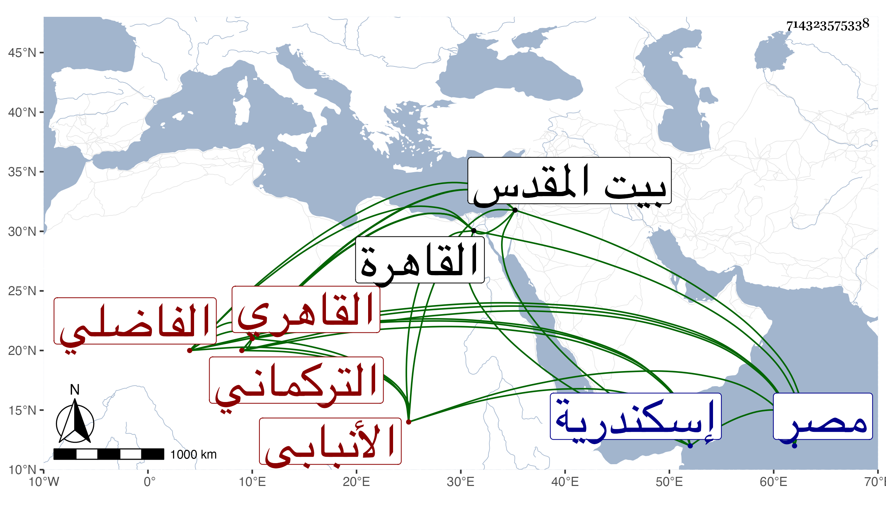

0902Sakhawi.DawLamic.ITO20230111-ara1.EIS1600.714323575338
Biography ID: 714323575338
560
فرج بن أحمد بن عبد الله التركماني القاهري ثم الأنبابي الفاضلي نسبة لخدمة الأمير الفاضل . ولد تقريبا سنة سبع وسبعين وسبعمائة بمنشية المهراني من مصر وخدم الجمال يوسف بن إسماعيل الإنبابي وسكن معه إنبابة ، وحج في خدمته مرتين وتردد معه إلى القاهرة لسماع الحديث مما سمعه على الحلاوي فضل الكلاب لابن المرزبان واستمر بعده قائما بخدمة ضريحه بإنبابة مع تكسبه بالخياطة هناك ، وزار بيت المقدس ودخل إسكندرية وغيرها وحدث سمع منه الفضلاء وكانت سيما الخير عليه لائحة . مات في حدود سنة ثمان وأربعين رحمه الله .
